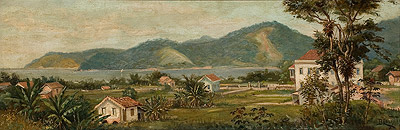
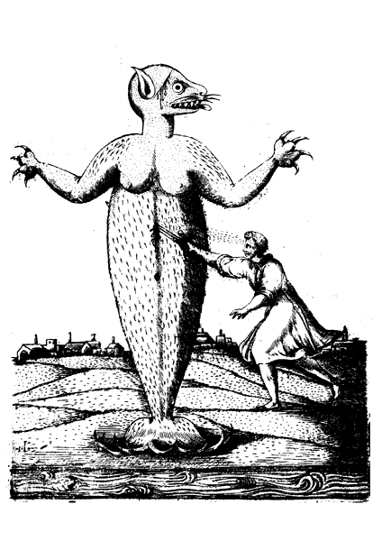
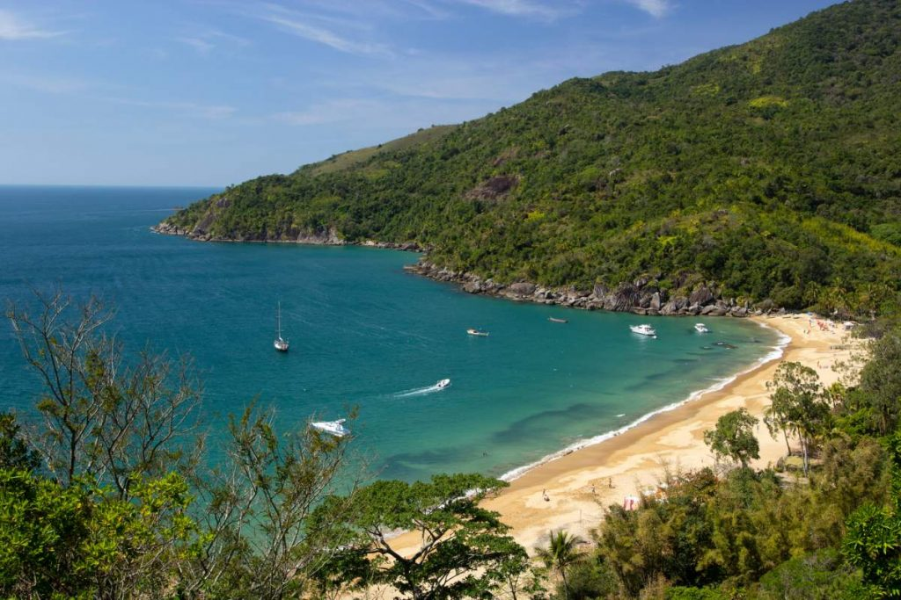

A primeira cidade do Brasil

Surgida no ano de 1532, foi a primeira vila da América Portuguesa, fundada por Martim Afonso de Sousa. Atualmente tem 490 anos e vários pontos turísticos históricos.
Desastre natural
Em 1542, São Vicente sofreu seu pior desastre natural. O mar agitado invadiu as ruas, engolindo a praia e destruindo a Igreja Matriz, a Casa do Conselho, a Cadeia, os estaleiros, o pelourinho e inúmeras casas da região. Inclusive, após esse acontecimento, a Vila teve que ser reconstruída (mas, desta vez, um pouco mais distante do mar).
No início a Ponte Pênsil não era para travessias
A Ponte Pênsil (primeira ponte do gênero "suspensa" construída no país) foi criada, em 1914, não para a travessia de carros e pedestres, mas por uma questão de saneamento básico. Para melhorar as condições sanitárias da Cidade, construíram a Ponte que deu suporte à instalação de uma tubulação para conduzir todo esgoto coletado em Santos e São Vicente – e assim – desbocar no Oceano Atlântico, na Ponta de Itaipu, onde hoje fica nossa cidade de Praia Grande. A construção teve seu êxito quanto à melhora na saúde pública de São Vicente e Santos, mas também se tornou símbolo do avanço na mobilidade urbana, já que o acesso à Praia Grande (que ainda fazia parte de São Vicente) era de grande dificuldade.
Primeira lenda colonial brasileira
Ipupiara (em tupi, “Demônio das Águas”) foi um monstro marinho que fez parte da mitologia dos povos do período da colonização. Na história, uma indígena teria avistado a figura marinha e logo pedido socorro ao capitão Baltazar, que saiu de casa com as vestimentas do corpo e sua espada na cintura. Depois de perfurar o misterioso “monstro”, levou seu corpo para a praça, fazendo questão de mostrar aos moradores a figura de 3,5 metros de altura, braços longos, pés de barbatanas, corpo coberto de pelos e focinho com bigode. São Vicente criou, inclusive, um monumento em sua homenagem, na Praça 22 de janeiro – que passou a ser conhecida como ‘Parque Ipupiara’.
Itaquitanduva, uma praia ainda preservada
Pertencente ao Parque Estadual Xixová-Japuí, Itaquitanduva ou – como muitos chamam – “Quitanduva” é uma praia preservada, devido ao seu difícil acesso. O lugar é destino de muitos surfistas e aventureiros, que enfrentam uma trilha de mata fechada para chegar a esse incrível destino.